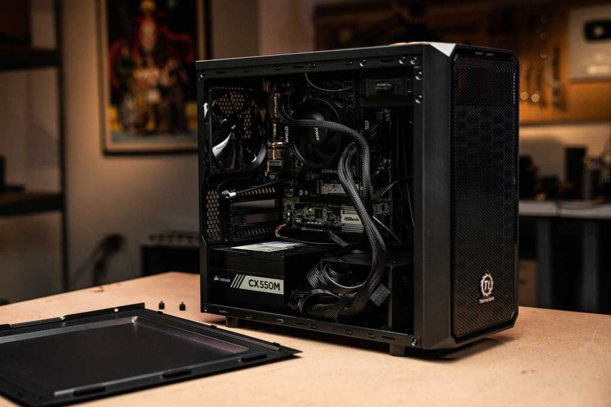
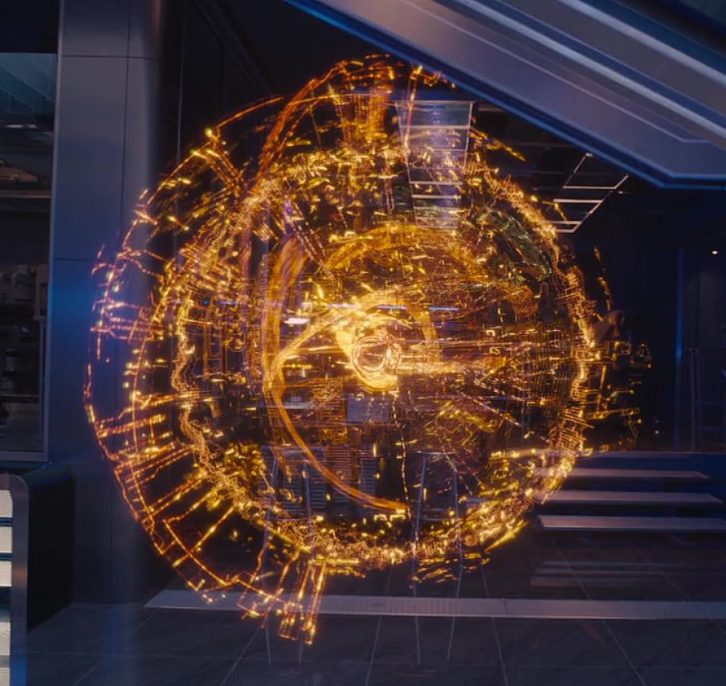

Education and Experience
Diploma of Infomration Communication Technology
Western Sydney University The College
Studying web design, basic HTML coding, Networking/Subnetting, and database management
Amazon Web Service and Cloud computing
Sydney Australia
School work experince that allowed us to work in AWS and work on projects like cloud data management
Project Highlights
Here are some of my personal projects that i've worked on and is working on currently.

Computer Building
I am a gamer who likes to build my own PC's and sometimes even for clients.

Building my personal J.A.R.V.I.S
Currently working on a real life Jarvis from MARVELS Iron Man to use as my personal assistant.

DATABSE MANAGEMENT
I have worked on database for stores, basic cloud management, and have worked on SQL
Portfolio Cards
Database Management
Working for companies such as AWS involves alot of cloud managament data works.

PC BUILDING
From assembling computers, to installing windows and running linux to use for both gaming and work.

J.A.R.V.I.S
Inspired by MARVELS iron man, I am currently working on a real life Jarvis.
Evidence and Reflection
This is the ideas behind my website and design of choice.